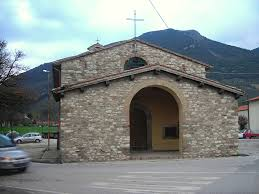

Economia Si basa principalmente sull'agricoltura, con relativo commercio di macchine agricole. Le colture principali sono i cereali (in particolare frumento e mais), il girasole, la vite e l'olio. Altra fonte di reddito è il commercio di generi alimentari (è presente una panetteria/pasticceria, una pizzeria ed un piccolo supermercato) e di abbigliamento. Inoltre, Mocaiana è nota per il commercio di materiale edilizio ad uso industriale e privato. Infrastrutture e trasporti Ferrovie Magnifying glass icon mgx2.svg Lo stesso argomento in dettaglio: Stazione di Mocaiana e Ferrovia Arezzo-Fossato di Vico. Dal 1886 al 1945 era in funzione anche la Ferrovia Appennino Centrale a scartamento ridotto che partiva da Arezzo e arrivava fino a Fossato di Vico e a Mocaiana aveva la sua stazione ferroviaria. Sport Impianti sportivi Mocaiana è fornita di una palestra comunale, annessa alle scuole medie ed elementari, nella quale si svolgono corsi di ballo, attività di pattinaggio, di arrampicata su parete rocciosa svolta dal C.A.I. (Club Alpino Italiano), partite ed allenamenti di calcio a 5 ed altre varie attività. È presente, inoltre, un campo di calcio a 5 all'aperto in prossimità della palestra.
Sito prodotto dalla Pro Loco